Home
五自由度机械臂建模
MoveIt!五自由度手臂pick_and_place抓取规划演示
使用ROS MoveIt！控制diy五自由度机械臂
本文转载自： https://zhuanlan.zhihu.com/p/267134725
五自由度机械臂建模
学习代码都记录在个人github上，欢迎关注~
Matlab机器人工具箱版本9.10
机械臂还是原来的机械臂，之前用ROS做底层驱动，不需要写正逆运动学和相关算法就能得到一些简单的仿真轨迹，详情可见我之前的博客：
六自由度机械臂ROS+Rviz+Arbotix控制器仿真
使用MoveIt！+Arbotix控制六自由度机械臂
MoveIt！入门：RobotModel、RobotState
MoveIt!五自由度机械臂pick_and_place抓取规划演示
使用ROS MoveIt!控制真实五自由度机械臂
下面我搞一搞这个底层部分：
标准D-H法建模
由于该机械臂只有五个自由度，并且D-H法只能实现绕Z轴的旋转和沿X轴的位移，而该臂第四个关节和第五个关节坐标系必须先绕着Z轴旋转90度，然后再绕X轴旋转90度，这是常规D-H法无法实现的。这里可以在第四个关节和第五个关节中设置一个虚拟关节，以此来过渡一下，解决上述问题。建模如下：
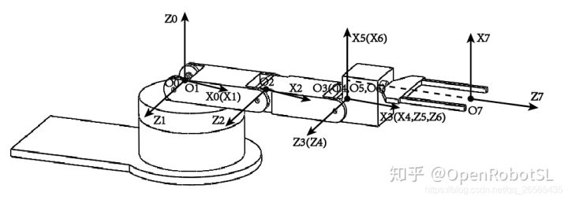
| i | αi | ai | di | θi |
|---|
正运动学Matlab
% Standard DH
% five_dof robot
% 在关节4和关节5之间增加一个虚拟关节，便于逆运动学计算
clear;
clc;
th(1) = 0; d(1) = 0; a(1) = 0; alp(1) = pi/2;
th(2) = 0; d(2) = 0; a(2) = 0.104;alp(2) = 0;
th(3) = 0; d(3) = 0; a(3) = 0.096; alp(3) = 0;
th(4) = 0; d(4) = 0; a(4) = 0; alp(4) = 0;
th(5) = pi/2; d(5) = 0; a(5) = 0; alp(5) = pi/2;
th(6) = 0; d(6) = 0; a(6) = 0; alp(6) = 0;
th(7) = 0; d(7) = 0.163; a(7) = 0.028; alp(7) = 0;
% DH parameters th d a alpha sigma
L1 = Link([th(1), d(1), a(1), alp(1), 0]);
L2 = Link([th(2), d(2), a(2), alp(2), 0]);
L3 = Link([th(3), d(3), a(3), alp(3), 0]);
L4 = Link([th(4), d(4), a(4), alp(4), 0]);
L5 = Link([th(5), d(5), a(5), alp(5), 0]);
L6 = Link([th(6), d(6), a(6), alp(6), 0]);
L7 = Link([th(7), d(7), a(7), alp(7), 0]);
robot = SerialLink([L1, L2, L3, L4, L5, L6, L7]);
robot.name='MyRobot-5-dof';
robot.display()
theta = [0 0 0 0 90 0 0]*pi/180;
robot.teach();
robot.plot(theta);
t = robot.fkine(theta) %末端执行器位姿
ik_T = five_dof_ikine(t)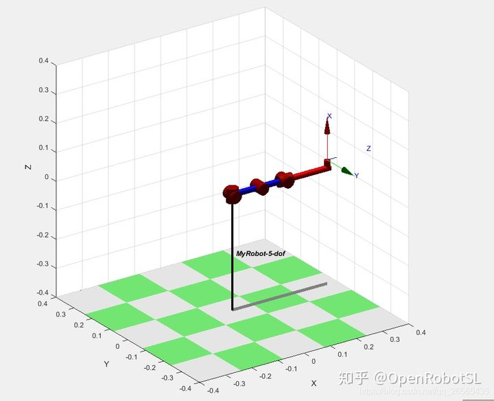
逆运动学推导
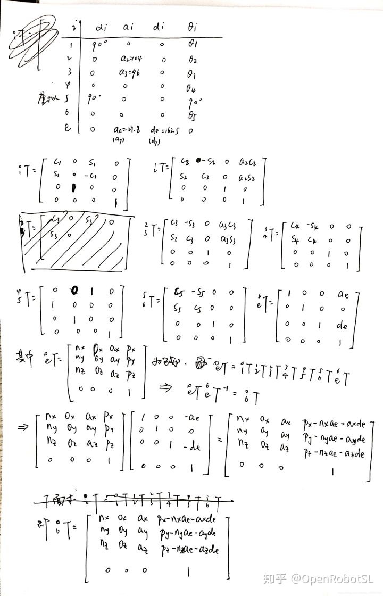
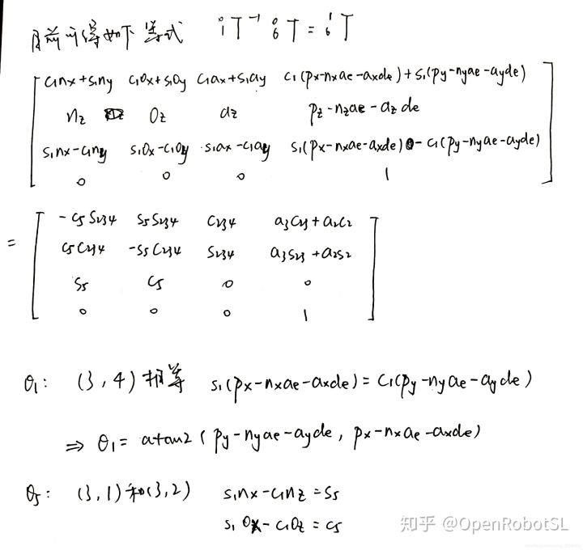

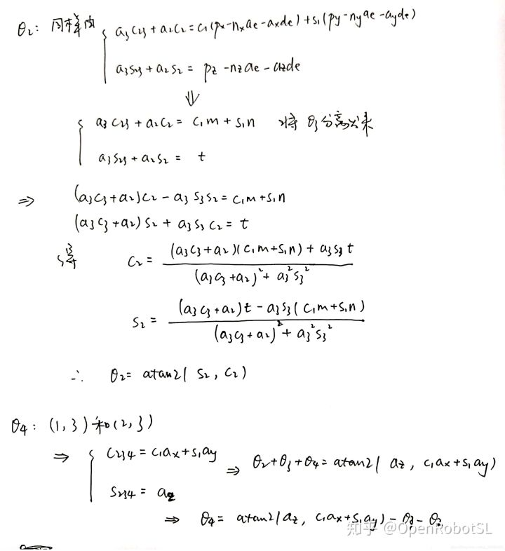
逆运动学Matlab
function ik_T = five_dof_ikine(fk_T)
a2 = 0.104; a3 = 0.096; ae = 0.028; de = 0.163; % ae和de即为a7、d7
nx = fk_T(1, 1); ox = fk_T(1, 2); ax = fk_T(1, 3); px = fk_T(1, 4);
ny = fk_T(2, 1); oy = fk_T(2, 2); ay = fk_T(2, 3); py = fk_T(2, 4);
nz = fk_T(3, 1); oz = fk_T(3, 2); az = fk_T(3, 3); pz = fk_T(3, 4);
% theta1
theta1 = atan2(py - ny*ae - ay*de, px - nx*ae - ax*de);
% theta5
theta5 = atan2(sin(theta1)*nx - cos(theta1)*ny, sin(theta1)*ox - cos(theta1)*oy);
% theta3有两个解
m = px - nx*ae - ax*de;
n = py - ny*ae - ay*de;
t = pz - nz*ae - az*de;
c3 = (power(cos(theta1), 2)*power(m, 2) + power(sin(theta1), 2)*power(n, 2) + 2*sin(theta1)*cos(theta1)*m*n + power(t, 2) - power(a2, 2) - power(a3, 2)) / (2*a2*a3);
theta3_1 = atan2(sqrt(1-power(c3, 2)), c3);
theta3_2 = atan2(-sqrt(1-power(c3, 2)), c3);
% theta2有两个解
% 对应theta3_1
c2_1 = ((a3*cos(theta3_1) + a2)*(cos(theta1)*m + sin(theta1)*n) + a3*sin(theta3_1)*t) / (power(a3*cos(theta3_1) + a2, 2) + power(a3, 2)*power(sin(theta3_1), 2));
s2_1 = ((a3*cos(theta3_1) + a2)*t - a3*sin(theta3_1)*(cos(theta1)*m + sin(theta1)*n)) / (power(a3*cos(theta3_1) + a2, 2) + power(a3, 2)*power(sin(theta3_1), 2));
% 对应theta3_2
c2_2 = ((a3*cos(theta3_2) + a2)*(cos(theta1)*m + sin(theta1)*n) + a3*sin(theta3_2)*t) / (power(a3*cos(theta3_2) + a2, 2) + power(a3, 2)*power(sin(theta3_2), 2));
s2_2 = ((a3*cos(theta3_2) + a2)*t - a3*sin(theta3_2)*(cos(theta1)*m + sin(theta1)*n)) / (power(a3*cos(theta3_2) + a2, 2) + power(a3, 2)*power(sin(theta3_2), 2));
theta2_1 = atan2(s2_1, c2_1);
theta2_2 = atan2(s2_2, c2_2);
% theta4有两个解
theta4_1 = atan2(az, cos(theta1)*ax + sin(theta1)*ay) - theta3_1 - theta2_1;
theta4_2 = atan2(az, cos(theta1)*ax + sin(theta1)*ay) - theta3_2 - theta2_2;
ik_T = [theta1, theta2_1, theta3_1, theta4_1, theta5;
theta1, theta2_2, theta3_2, theta4_2, theta5];
end验证
theta = [0 45 120 60 90 45 0]*pi/180;
正运动学计算结果：
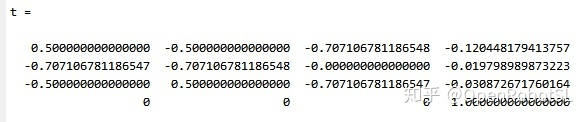
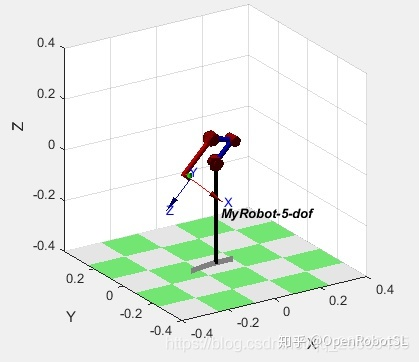
逆运动学计算结果：

带入计算得：
theta = [3.141592653589793 0.400142386223488 2.094395102393196 -3.279935652014131 pi/2 -2.356194490192346 0];
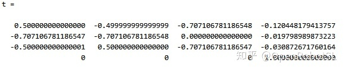
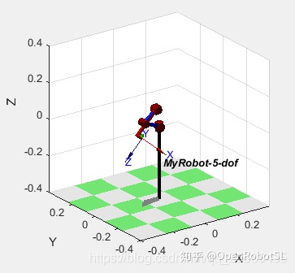
theta = [3.141592653589793 2.356194490192346 -2.094395102393196 -1.047197551196598 pi/2 -2.356194490192346 0];
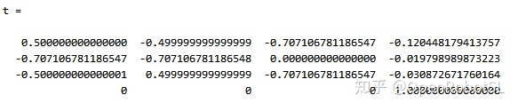
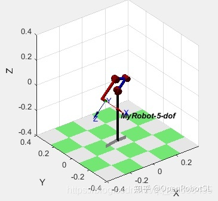
运算结果一致。
下面是C程序实现代码
由于正运动学涉及到矩阵计算，因此我写了个简单的矩阵计算程序，如下：
/*
* MyMatrix.h
*
* Created on: Jul 13, 2019
* Author: xuuyann
*/
#ifndef HEADER_MYMATRIX_H_
#define HEADER_MYMATRIX_H_
typedef struct MNode *PtrToMNode;
struct MNode
{
int row;
int column;
float **data;
};
typedef PtrToMNode Matrix;
// 创建一个矩阵
Matrix Create_Matrix(int row, int column);
// 初始化矩阵
void Init_Matrix(Matrix mat);
// 给矩阵每个元素赋值
void SetData_Matrix(Matrix mat, float data[]);
// 打印矩阵
void Show_Matrix(Matrix mat);
// 矩阵加减法
Matrix AddorSub_Matrix(Matrix mat_1, Matrix mat_2, int flag);
// 转置
Matrix Trans_Matrix(Matrix mat);
// 矩阵乘法
Matrix Mult_Matrix(Matrix mat_1, Matrix mat_2);
// 单位矩阵
Matrix eye(int n);
// 取出矩阵某行某列的元素
float PickInMat(Matrix mat, int r, int c);
#endif /* HEADER_MYMATRIX_H_ */
/*
* MyMatrix.c
*
* Created on: Jul 13, 2019
* Author: xuuyann
*/
#include "../header/MyMatrix.h"
#include <stdio.h>
#include <stdlib.h>
#include <math.h>
void Init_Matrix(Matrix mat)
{
int i, j;
for (i = 0; i < mat->row; i++){
for (j = 0; j < mat->column; j++){
mat->data[i][j] = 0;
}
}
}
Matrix Create_Matrix(int row, int col)
{
Matrix mat;
mat = (Matrix)malloc(sizeof(struct MNode));
if (row <= 0 || col <= 0){
printf("ERROR, in creat_Matrix the row or col <= 0\n");
exit(1);
}
if (row > 0 && col >0){
mat->row = row;
mat->column = col;
mat->data = (float **)malloc(row*sizeof(float *));
if (mat->data == NULL){
printf("ERROR, in creat_Matrix the mat->data == NULL\n");
exit(1);
}
int i;
for (i = 0; i < row; i++ ){
*(mat->data + i) = (float *)malloc(col*sizeof(float));
if (mat->data[i] == NULL){
printf("ERROR, in create_Matrix the mat->data[i] == NULL\n");
exit(1);
}
}
Init_Matrix(mat);
}
return mat;
}
void Show_Matrix(Matrix mat)
{
int i, j;
for (i = 0; i < mat->row; i++){
for (j = 0; j < mat->column; j++)
printf("%.6f\t", mat->data[i][j]);
printf("\n");
}
}
void SetData_Matrix(Matrix mat, float data[])
{
int i, j;
for (i = 0; i < mat->row; i++){
for (j = 0; j < mat->column; j++){
mat->data[i][j] = data[i*mat->column + j];
}
}
}
//flag = 0, add; flag = 1, sub
Matrix AddorSub_Matrix(Matrix mat_1, Matrix mat_2, int flag)
{
Matrix rst_mat;
if (mat_1->column != mat_2->column){
printf("ERROR in AddorSub, column !=\n");
exit(1);
}
if (mat_1->row != mat_2->row){
printf("ERROR in AddorSub, row !=\n");
exit(1);
}
int i, j;
rst_mat = Create_Matrix(mat_1->row, mat_1->column);
for (i = 0; i < mat_1->row; i++){
for (j = 0; j < mat_1->column; j++)
rst_mat->data[i][j] = mat_1->data[i][j] + pow(-1, flag)*mat_2->data[i][j];
}
return rst_mat;
}
//转置
Matrix Trans_Matrix(Matrix mat)
{
Matrix mat_;
int i, j;
mat_ = Create_Matrix(mat->row, mat->column);
for (i = 0; i < mat->row; i ++){
for (j = 0; j < mat->column; j++)
mat_->data[i][j] = mat->data[i][j];
}
return mat_;
}
Matrix Mult_Matrix(Matrix mat_1, Matrix mat_2)
{
Matrix rst_mat;
int i, j, m;
if (mat_1->column != mat_2->row){
printf("ERROR in Mult_Matrix, column != row\n");
exit(1);
}else{
rst_mat = Create_Matrix(mat_1->row, mat_2->column);
for (i = 0; i < mat_1->row; i++){
for (j = 0; j < mat_2->column; j++){
for (m = 0; m < mat_1->column; m++)
rst_mat->data[i][j] += mat_1->data[i][m] * mat_2->data[m][j];
}
}
}
return rst_mat;
}
Matrix eye(int n)
{
Matrix E;
int i, j;
if (n <= 0){
printf("ERROR in eye\n");
exit(1);
}
E = Create_Matrix(n, n);
for (i = 0; i < n; i++){
for (j = 0; j < n; j++){
if (i == j)
E->data[i][j] = 1;
else
E->data[i][j] = 0;
}
}
return E;
}
float PickInMat(Matrix mat, int r, int c)
{
float rst;
rst = mat->data[r - 1][c - 1];
return rst;
}
/*
* five_dof_kinematic.h
*
* Created on: Jul 13, 2019
* Author: xuuyann
*/
#ifndef FIVEDOFKINEMATIC_H_
#define FIVEDOFKINEMATIC_H_
#include "../header/MyMatrix.h"
#define PI 3.141592653
typedef struct DH_Node *PtrToDHNode;
struct DH_Node
{
// theta
float th1;
float th2;
float th3;
float th4;
float th5;
float th6;
float th7;
// d
float d1;
float d2;
float d3;
float d4;
float d5;
float d6;
float d7;
// a
float a1;
float a2;
float a3;
float a4;
float a5;
float a6;
float a7;
// alpha
float alp1;
float alp2;
float alp3;
float alp4;
float alp5;
float alp6;
float alp7;
};
typedef PtrToDHNode Input_data;
// 初始化ＤＨ参数
void Init_DH(Input_data DH_para);
// 正运动学推导
Matrix five_dof_fkine(Input_data DH_para, float theta[]);
// 逆运动学推导
Matrix five_dof_ikine(Input_data DH_para, Matrix fk_T);
#endif /* HEADER_FIVE_DOF_KINEMATIC_H_ */
/*
* FiveDofKinemate.c
*
* Created on: Jul 13, 2019
* Author: xuuyann
*/
#include <stdio.h>
#include <stdlib.h>
#include <math.h>
#include "../header/FiveDofKinematic.h"
#include "../header/MyMatrix.h"
/* theta, d, a, alpha */
float DH[7][4] = {{0, 0, 0, PI/2},
{0, 0, 0.104, 0},
{0, 0, 0.096, 0},
{0, 0, 0, 0},
{PI/2, 0, 0, PI/2},
{0, 0, 0, 0},
{0, 0.163, 0.028, 0}};
void Init_DH(Input_data DH_para)
{
DH_para->th1 = DH[0][0];
DH_para->th2 = DH[1][0];
DH_para->th3 = DH[2][0];
DH_para->th4 = DH[3][0];
DH_para->th5 = DH[4][0];
DH_para->th6 = DH[5][0];
DH_para->th7 = DH[6][0];
DH_para->d1 = DH[0][1];
DH_para->d2 = DH[1][1];
DH_para->d3 = DH[2][1];
DH_para->d4 = DH[3][1];
DH_para->d5 = DH[4][1];
DH_para->d6 = DH[5][1];
DH_para->d7 = DH[6][1];
DH_para->a1 = DH[0][2];
DH_para->a2 = DH[1][2];
DH_para->a3 = DH[2][2];
DH_para->a4 = DH[3][2];
DH_para->a5 = DH[4][2];
DH_para->a6 = DH[5][2];
DH_para->a7 = DH[6][2];
DH_para->alp1 = DH[0][3];
DH_para->alp2 = DH[1][3];
DH_para->alp3 = DH[2][3];
DH_para->alp4 = DH[3][3];
DH_para->alp5 = DH[4][3];
DH_para->alp6 = DH[5][3];
DH_para->alp7 = DH[6][3];
}
// 正运动学推导
Matrix five_dof_fkine(Input_data DH_para, float theta[])
{
Matrix rst, Ti;
rst = eye(4);
Ti = Create_Matrix(4, 4);
float a[7] = {DH_para->a1, DH_para->a2, DH_para->a3, DH_para->a4, DH_para->a5, DH_para->a6, DH_para->a7};
float d[7] = {DH_para->d1, DH_para->d2, DH_para->d3, DH_para->d4, DH_para->d5, DH_para->d6, DH_para->d7};
float alp[7] = {DH_para->alp1, DH_para->alp2, DH_para->alp3, DH_para->alp4, DH_para->alp5, DH_para->alp6, DH_para->alp7};
float th[7] = {theta[0], theta[1], theta[2], theta[3], DH_para->th5, theta[4], DH_para->th7};
for (int i = 0; i < 7; i++){
Ti->data[0][0] = cos(th[i]);
Ti->data[0][1] = -sin(th[i]) * cos(alp[i]);
Ti->data[0][2] = sin(th[i]) * sin(alp[i]);
Ti->data[0][3] = a[i] * cos(th[i]);
Ti->data[1][0] = sin(th[i]);
Ti->data[1][1] = cos(th[i]) * cos(alp[i]);
Ti->data[1][2] = -cos(th[i]) * sin(alp[i]);
Ti->data[1][3] = a[i] * sin(th[i]);
Ti->data[2][0] = 0;
Ti->data[2][1] = sin(alp[i]);
Ti->data[2][2] = cos(alp[i]);
Ti->data[2][3] = d[i];
Ti->data[3][0] = 0;
Ti->data[3][1] = 0;
Ti->data[3][2] = 0;
Ti->data[3][3] = 1;
//Show_Matrix(Ti);
//printf("\n");
// Matrix Mult_Matrix(Matrix mat_1, Matrix mat_2);
rst = Mult_Matrix(rst, Ti);
//Show_Matrix(rst);
}
return rst;
}
Matrix five_dof_ikine(Input_data DH_para, Matrix fk_T)
{
Matrix ik_T;
ik_T = Create_Matrix(2, 5);
float a2 = DH_para->a2;
float a3 = DH_para->a3;
float ae = DH_para->a7;
float de = DH_para->d7;
float nx, ny, nz;
float ox, oy, oz;
float ax, ay, az;
float px, py, pz;
nx = PickInMat(fk_T, 1, 1);
ny = PickInMat(fk_T, 2, 1);
nz = PickInMat(fk_T, 3, 1);
ox = PickInMat(fk_T, 1, 2);
oy = PickInMat(fk_T, 2, 2);
oz = PickInMat(fk_T, 3, 2);
ax = PickInMat(fk_T, 1, 3);
ay = PickInMat(fk_T, 2, 3);
az = PickInMat(fk_T, 3, 3);
px = PickInMat(fk_T, 1, 4);
py = PickInMat(fk_T, 2, 4);
pz = PickInMat(fk_T, 3, 4);
// theta1
float theta1;
theta1 = atan2(py - ny*ae - ay*de, px - nx*ae - ax*de);
// theta5;
float theta5;
theta5 = atan2(sin(theta1)*nx - cos(theta1)*ny, sin(theta1)*ox - cos(theta1)*oy);
// theta3
float m = px - nx*ae - ax*de;
float n = py - ny*ae - ay*de;
float t = pz - nz*ae - az*de;
float c3;
c3 = (pow(cos(theta1), 2)*pow(m, 2) + pow(sin(theta1), 2)*pow(n, 2)
+ 2*sin(theta1)*cos(theta1)*m*n + pow(t, 2) - pow(a2, 2) - pow(a3, 2)) / (2*a2*a3);
float theta3_1 = atan2(sqrt(1-pow(c3, 2)), c3);
float theta3_2 = atan2(-sqrt(1-pow(c3, 2)), c3);
// theta2
float c2_1, s2_1, c2_2, s2_2;
c2_1 = ((a3*cos(theta3_1) + a2)*(cos(theta1)*m + sin(theta1)*n) + a3*sin(theta3_1)*t)
/ (pow(a3*cos(theta3_1) + a2, 2) + pow(a3, 2)*pow(sin(theta3_1), 2));
s2_1 = ((a3*cos(theta3_1) + a2)*t - a3*sin(theta3_1)*(cos(theta1)*m + sin(theta1)*n))
/ (pow(a3*cos(theta3_1) + a2, 2) + pow(a3, 2)*pow(sin(theta3_1), 2));
c2_2 = ((a3*cos(theta3_2) + a2)*(cos(theta1)*m + sin(theta1)*n) + a3*sin(theta3_2)*t)
/ (pow(a3*cos(theta3_2) + a2, 2) + pow(a3, 2)*pow(sin(theta3_2), 2));
s2_2 = ((a3*cos(theta3_2) + a2)*t - a3*sin(theta3_2)*(cos(theta1)*m + sin(theta1)*n))
/ (pow(a3*cos(theta3_2) + a2, 2) + pow(a3, 2)*pow(sin(theta3_2), 2));
float theta2_1 = atan2(s2_1, c2_1);
float theta2_2 = atan2(s2_2, c2_2);
// theta4
float theta4_1 = atan2(az, cos(theta1)*ax + sin(theta1)*ay) - theta3_1 - theta2_1;
float theta4_2 = atan2(az, cos(theta1)*ax + sin(theta1)*ay) - theta3_2 - theta2_2;
float th[10] = {theta1, theta2_1, theta3_1, theta4_1, theta5,
theta1, theta2_2, theta3_2, theta4_2, theta5};
SetData_Matrix(ik_T, th);
return ik_T;
}
/*
* main.c
*
* Created on: Jul 13, 2019
* Author: xuuyann
*/
#include <math.h>
#include <stdio.h>
#include <stdlib.h>
#include "../header/FiveDofKinematic.h"
#include "../header/MyMatrix.h"
int main()
{
Matrix fk_T, ik_T;
fk_T = Create_Matrix(4, 4);
ik_T = Create_Matrix(2, 5);
float theta[5] = {0, 45*PI/180, 120*PI/180, 60*PI/180, 45*PI/180};
Input_data DH_para;
DH_para = (Input_data)malloc(sizeof(struct DH_Node));
Init_DH(DH_para);
// Matrix five_dof_fkine(Input_data DH_para, float theta[])
fk_T = five_dof_fkine(DH_para, theta);
printf("fk_T:\n");
Show_Matrix(fk_T);
printf("\n");
// Matrix five_dof_ikine(Input_data DH_para, Matrix fk_T);
printf("ik_T:\n");
ik_T = five_dof_ikine(DH_para, fk_T);
Show_Matrix(ik_T);
return 0;
}theta = [0, 45, 120, 60, 45]
Ｃ语言运算结果：
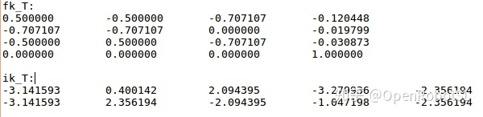
matlab运算结果：
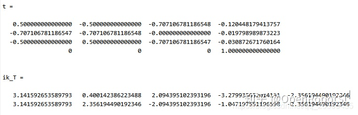
两者结果一致，证明c程序的正确性。
MoveIt!五自由度手臂pick_and_place抓取规划演示
写在前面
更正一下，前面一系列博客提到的“六自由度”机械臂实际上是arm部分五自由度+gripper部分一个自由度。我购买的机械臂手抓部分是一个舵机控制两个手爪开合，但是仿真时就得将gripper分成两个单独joint来看。
我查到过可以使用Mimic标签来模拟这种一个舵机控制两个对称手爪，貌似在gazebo中可以仿真，但是可能会在moveit中出现关节丢失的现象（我还没试过，估计比较麻烦）。所以，仿真就简单将gripper分成两个单独joint看。
演示
图中演示花费比较长时间，因为计算量比较大，加上五自由度arm部分在运动规划上存在很多限制，很容易出现pick and place failed。

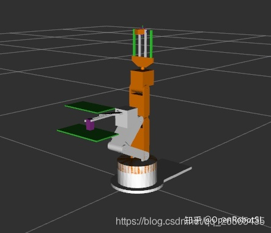
更换运动学插件ikfast
我用了几个pick_and_place的例子，换了一些object pose，但一直都是抓取失败。看了这位大神的博客ros下diy手臂rviz演示抓取放置，他和我一样都是五自由度的arm，用了个新包moveit_simple_grasps抓取成功了，嘻嘻天助我也，那我也来试试呗。试来试去，包啥的都配置成功了，结果rosrun pick_and_place.py仍然抓取失败，算好久好久还是失败，换pose也不对。接着baidu、google，查到这个帖子Using moveit with 5-DOF arm(需要fq)，同样也是always fails to grasp object，下面有个评论，如图。
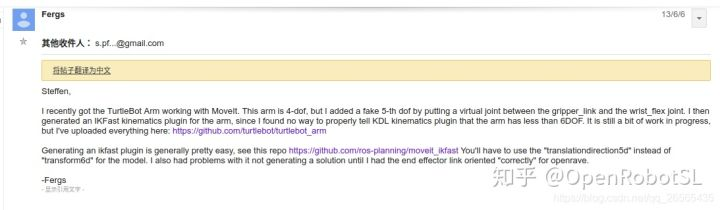
意思就是moveit中的KDL运动学插件可能对少于六自由度的机械臂不太友好，可以换成ikfast。虽然这是2013年的帖子，但是查了下IKfast插件，看起来很好用的样子，干脆把插件也给换了算了。
ROS进阶——MoveIt!运动学插件IKFAST配置，参考这个来安装ikfast。参数名字都换成自己相应配置的名称，另外需要注意的是，在进行==生成ikfast文件==这个步骤时，要让iktype=translationdirection5d。我生成这个文件时出错了，改变了一下end effector link的坐标方向就好了。
插件如其名，用起来so fast～换了几个pose之后，抓取终于成功了。
使用moveit_simple_grasps包
包简介
A basic grasp generator for simple objects such as blocks or cylinders for use with the MoveIt! pick and place pipeline. Does not consider friction cones or other dynamics.
Its current implementation simple takes as input a pose vector (postition and orientation) and generates a large number of potential grasp approaches and directions. Also includes a grasp filter for removing kinematically infeasible grasps via threaded IK solvers.
作者说这个包还有很多东西要维护，所以实际使用起来会出现一些问题。
先要注释掉几行代码，参见https://github.com/qboticslabs/mastering_ros/issues/3，原因是包以及系统版本的问题，下载下面的moveit_simple_grasps_1.zip，然后根据相应修改注释掉几行代码，这个亲测有效。
建立自己的(arg robot)_grasp_data.yaml
base_link: 'base_link'
# ====================================================
gripper:
end_effector_name: gripper #ee group name
#actuated joints in end effector
joints : [finger_joint1, finger_joint2]
#open position
pregrasp_posture : [0.0, 0.0]
pregrasp_time_from_start : 4.0
#close position
grasp_posture : [0.0225, 0.0225]
grasp_time_from_start : 4.0
#???
#desired pose from end effector to grasp - [x,y,z]
grasp_pose_to_eef : [0.0, 0.0, 0.0]
#desired pose from end effector to grasp - [r, p, y]
grasp_pose_to_eef_rotation : [0.0, 0.0, 0.0] # 1.5707 = PI/2
#根据自己moveit_config文件夹中的srdf进行设置
end_effector_parent_link: gripper_frame这个文件定义了用于抓取对象的夹持器以及抓取前、后的位姿，注意这里第三行代码名称为gripper，对应simple_grasps_server.cpp中第193行开始的代码，如下。同时，将该文件中的planning_group_name_(side_+"_arm")修改为planning_group_name_("arm")。
int main(int argc, char *argv[])
{
ros::init(argc, argv, "grasp_generator_server");
moveit_simple_grasps::GraspGeneratorServer grasp_generator_server("generate", "gripper");
ros::spin();
return 0;
}
pick_and_place.py
#!/usr/bin/env python
# -*- coding: utf-8 -*-
import rospy
from moveit_commander import RobotCommander, PlanningSceneInterface
from moveit_commander import roscpp_initialize, roscpp_shutdown
from actionlib import SimpleActionClient, GoalStatus
from geometry_msgs.msg import Pose, PoseStamped, PoseArray, Quaternion
from moveit_msgs.msg import PickupAction, PickupGoal
from moveit_msgs.msg import PlaceAction, PlaceGoal
from moveit_msgs.msg import PlaceLocation
from moveit_msgs.msg import MoveItErrorCodes
from moveit_simple_grasps.msg import GenerateGraspsAction, GenerateGraspsGoal, GraspGeneratorOptions
from tf.transformations import quaternion_from_euler
import sys
import copy
import numpy
# Create dict with human readable MoveIt! error codes:
moveit_error_dict = {}
for name in MoveItErrorCodes.__dict__.keys():
if not name[:1] == '_':
code = MoveItErrorCodes.__dict__[name]
moveit_error_dict[code] = name
class PickAndPlace:
def __init__(self):
# Retrieve params:
self._table1_object_name = rospy.get_param('~table_object_name', 'table1')
self._table2_object_name = rospy.get_param('~table_object_name', 'table2')
self._grasp_object_name = rospy.get_param('~grasp_object_name', 'coke_can')
self._grasp_object_width = rospy.get_param('~grasp_object_width', 0.015)
self._arm_group = rospy.get_param('~arm', 'arm')
self._gripper_group = rospy.get_param('~gripper', 'gripper')
self._approach_retreat_desired_dist = rospy.get_param('~approach_retreat_desired_dist', 0.15)
self._approach_retreat_min_dist = rospy.get_param('~approach_retreat_min_dist', 0.01)
rospy.loginfo('_approach_retreat_desired_dist=%f',self._approach_retreat_desired_dist)
rospy.loginfo('_approach_retreat_min_dist=%f',self._approach_retreat_min_dist)
# Create (debugging) publishers:
self._grasps_pub = rospy.Publisher('grasps', PoseArray, queue_size=1, latch=True)
self._places_pub = rospy.Publisher('places', PoseArray, queue_size=1, latch=True)
# Create planning scene and robot commander:
self._scene = PlanningSceneInterface()
self._robot = RobotCommander()
rospy.sleep(1.0)
# Clean the scene:
self._scene.remove_world_object(self._table1_object_name)
self._scene.remove_world_object(self._table2_object_name)
self._scene.remove_world_object(self._grasp_object_name)
# Add table and Coke can objects to the planning scene:
self._pose_table1 = self._add_table1(self._table1_object_name)
self._pose_table2 = self._add_table2(self._table2_object_name)
self._pose_coke_can = self._add_coke_can(self._grasp_object_name)
rospy.sleep(1.0)
# Define target place pose:
self._pose_place = Pose()
self._pose_place.position.x = self._pose_table2.position.x
self._pose_place.position.y = self._pose_table2.position.y
self._pose_place.position.z = self._pose_coke_can.position.z-0.005
self._pose_place.orientation = Quaternion(*quaternion_from_euler(0.0, 0.0, 0.0))
# Retrieve groups (arm and gripper):
self._arm = self._robot.get_group(self._arm_group)
self._gripper = self._robot.get_group(self._gripper_group)
# Create grasp generator 'generate' action client:
self._grasps_ac = SimpleActionClient('/moveit_simple_grasps_server/generate', GenerateGraspsAction)
if not self._grasps_ac.wait_for_server(rospy.Duration(5.0)):
rospy.logerr('Grasp generator action client not available!')
rospy.signal_shutdown('Grasp generator action client not available!')
return
# Create move group 'pickup' action client:
self._pickup_ac = SimpleActionClient('/pickup', PickupAction)
if not self._pickup_ac.wait_for_server(rospy.Duration(5.0)):
rospy.logerr('Pick up action client not available!')
rospy.signal_shutdown('Pick up action client not available!')
return
# Create move group 'place' action client:
self._place_ac = SimpleActionClient('/place', PlaceAction)
if not self._place_ac.wait_for_server(rospy.Duration(5.0)):
rospy.logerr('Place action client not available!')
rospy.signal_shutdown('Place action client not available!')
return
# Pick Coke can object:
while not self._pickup(self._arm_group, self._grasp_object_name, self._grasp_object_width):
rospy.logwarn('Pick up failed! Retrying ...')
rospy.sleep(2.0)
rospy.loginfo('Pick up successfully')
# Place Coke can object on another place on the support surface (table):
while not self._place(self._arm_group, self._grasp_object_name, self._pose_place):
rospy.logwarn('Place failed! Retrying ...')
rospy.sleep(2.0)
rospy.loginfo('Place successfully')
def __del__(self):
# Clean the scene:
self._scene.remove_world_object(self._grasp_object_name)
self._scene.remove_world_object(self._table1_object_name)
self._scene.remove_world_object(self._table2_object_name)
def _add_table1(self, name):
p = PoseStamped()
p.header.frame_id = self._robot.get_planning_frame()
p.header.stamp = rospy.Time.now()
p.pose.position.x = -0.20
p.pose.position.z = 0.20
q = quaternion_from_euler(0.0, 0.0, numpy.deg2rad(90.0))
p.pose.orientation = Quaternion(*q)
# Table size from ~/.gazebo/models/table/model.sdf, using the values
# for the surface link.
self._scene.add_box(name, p, (0.15, 0.08, 0.003))
return p.pose
def _add_table2(self, name):
p = PoseStamped()
p.header.frame_id = self._robot.get_planning_frame()
p.header.stamp = rospy.Time.now()
p.pose.position.y = 0.20
p.pose.position.z = 0.20
q = quaternion_from_euler(0.0, 0.0, numpy.deg2rad(90.0))
p.pose.orientation = Quaternion(*q)
# Table size from ~/.gazebo/models/table/model.sdf, using the values
# for the surface link.
self._scene.add_box(name, p, (0.15, 0.08, 0.003))
return p.pose
def _add_coke_can(self, name):
p = PoseStamped()
p.header.frame_id = self._robot.get_planning_frame()
p.header.stamp = rospy.Time.now()
p.pose.position.x = -0.20+0.02
p.pose.position.y = 0.01#0.0117890518355#0.0#-0.015 - 0.01
p.pose.position.z = 0.20 + (0.030) / 2.0
q = quaternion_from_euler(0.0, 0.0, 0.0)
p.pose.orientation = Quaternion(*q)
# Coke can size from ~/.gazebo/models/coke_can/meshes/coke_can.dae,
# using the measure tape tool from meshlab.
# The box is the bounding box of the coke cylinder.
# The values are taken from the cylinder base diameter and height.
self._scene.add_box(name, p, (0.015, 0.015, 0.030))
#self._scene.add_sphere (name, p, (0.015))
return p.pose
def _generate_grasps(self, pose, width):
"""
Generate grasps by using the grasp generator generate action
"""
# Create goal:
goal = GenerateGraspsGoal()
goal.pose = pose
goal.width = width
options = GraspGeneratorOptions()
options.grasp_axis = GraspGeneratorOptions.GRASP_AXIS_Z
options.grasp_direction = GraspGeneratorOptions.GRASP_DIRECTION_UP
options.grasp_rotation = GraspGeneratorOptions.GRASP_ROTATION_FULL
# @todo disabled because it works better with the default options
#goal.options.append(options)
# Send goal and wait for result:
state = self._grasps_ac.send_goal_and_wait(goal)
if state != GoalStatus.SUCCEEDED:
rospy.logerr('Grasp goal failed!: %s' % self._grasps_ac.get_goal_status_text())
return None
grasps = self._grasps_ac.get_result().grasps
# Publish grasps (for debugging/visualization purposes):
self._publish_grasps(grasps)
return grasps
def _generate_places(self, target):
# Generate places:
places = []
now = rospy.Time.now()
for angle in numpy.arange(0.0, numpy.deg2rad(360.0), numpy.deg2rad(2.0)):
# Create place location:
place = PlaceLocation()
place.place_pose.header.stamp = now
place.place_pose.header.frame_id = self._robot.get_planning_frame()
# Set target position:
place.place_pose.pose = copy.deepcopy(target)
# Generate orientation (wrt Z axis):
q = quaternion_from_euler(0.0, 0.0, angle)
#q = quaternion_from_euler(0.0,angle, 0.0 )
place.place_pose.pose.orientation = Quaternion(*q)
# Generate pre place approach:
place.pre_place_approach.desired_distance = self._approach_retreat_desired_dist
place.pre_place_approach.min_distance = self._approach_retreat_min_dist
place.pre_place_approach.direction.header.stamp = now
place.pre_place_approach.direction.header.frame_id = self._robot.get_planning_frame()
place.pre_place_approach.direction.vector.x = 0
place.pre_place_approach.direction.vector.y = 0
place.pre_place_approach.direction.vector.z = -1
# Generate post place approach:
place.post_place_retreat.direction.header.stamp = now
place.post_place_retreat.direction.header.frame_id = self._robot.get_planning_frame()
place.post_place_retreat.desired_distance = self._approach_retreat_desired_dist
place.post_place_retreat.min_distance = self._approach_retreat_min_dist
place.post_place_retreat.direction.vector.x = 0
place.post_place_retreat.direction.vector.y = 0
place.post_place_retreat.direction.vector.z = 1
# Add place:
places.append(place)
# Publish places (for debugging/visualization purposes):
self._publish_places(places)
return places
def _create_pickup_goal(self, group, target, grasps):
"""
Create a MoveIt! PickupGoal
"""
# Create goal:
goal = PickupGoal()
goal.group_name = group
goal.target_name = target
goal.possible_grasps.extend(grasps)
goal.allowed_touch_objects.append(target)
goal.support_surface_name = self._table1_object_name
# Configure goal planning options:
goal.allowed_planning_time = 15.0
goal.planning_options.planning_scene_diff.is_diff = True
goal.planning_options.planning_scene_diff.robot_state.is_diff = True
goal.planning_options.plan_only = False
goal.planning_options.replan = True
goal.planning_options.replan_attempts = 10
return goal
def _create_place_goal(self, group, target, places):
"""
Create a MoveIt! PlaceGoal
"""
# Create goal:
goal = PlaceGoal()
goal.group_name = group
goal.attached_object_name = target
goal.place_locations.extend(places)
goal.support_surface_name = self._table2_object_name
# Configure goal planning options:
goal.allowed_planning_time = 15.0
goal.planning_options.planning_scene_diff.is_diff = True
goal.planning_options.planning_scene_diff.robot_state.is_diff = True
goal.planning_options.plan_only = False
goal.planning_options.replan = True
goal.planning_options.replan_attempts = 10
return goal
def _pickup(self, group, target, width):
"""
Pick up a target using the planning group
"""
# Obtain possible grasps from the grasp generator server:
grasps = self._generate_grasps(self._pose_coke_can, width)
self.grasps=grasps
# Create and send Pickup goal:
goal = self._create_pickup_goal(group, target, grasps)
state = self._pickup_ac.send_goal_and_wait(goal)
if state != GoalStatus.SUCCEEDED:
rospy.logerr('Pick up goal failed!: %s' % self._pickup_ac.get_goal_status_text())
return None
result = self._pickup_ac.get_result()
# Check for error:
err = result.error_code.val
if err != MoveItErrorCodes.SUCCESS:
rospy.logwarn('Group %s cannot pick up target %s!: %s' % (group, target, str(moveit_error_dict[err])))
return False
return True
def _place(self, group, target, place):
"""
Place a target using the planning group
"""
# Obtain possible places:
places = self._generate_places(place)
# Create and send Place goal:
goal = self._create_place_goal(group, target, places)
state = self._place_ac.send_goal_and_wait(goal)
if state != GoalStatus.SUCCEEDED:
rospy.logerr('Place goal failed!: %s' % self._place_ac.get_goal_status_text())
return None
result = self._place_ac.get_result()
# Check for error:
err = result.error_code.val
if err != MoveItErrorCodes.SUCCESS:
rospy.logwarn('Group %s cannot place target %s!: %s' % (group, target, str(moveit_error_dict[err])))
return False
return True
def _publish_grasps(self, grasps):
"""
Publish grasps as poses, using a PoseArray message
"""
if self._grasps_pub.get_num_connections() > 0:
msg = PoseArray()
msg.header.frame_id = self._robot.get_planning_frame()
msg.header.stamp = rospy.Time.now()
for grasp in grasps:
p = grasp.grasp_pose.pose
msg.poses.append(Pose(p.position, p.orientation))
self._grasps_pub.publish(msg)
def _publish_places(self, places):
"""
Publish places as poses, using a PoseArray message
"""
if self._places_pub.get_num_connections() > 0:
msg = PoseArray()
msg.header.frame_id = self._robot.get_planning_frame()
msg.header.stamp = rospy.Time.now()
for place in places:
msg.poses.append(place.place_pose.pose)
self._places_pub.publish(msg)
def main():
p = PickAndPlace()
rospy.spin()
if __name__ == '__main__':
roscpp_initialize(sys.argv)
rospy.init_node('pick_and_place')
main()
roscpp_shutdown()moveit_simple_grasps包中写了simple_grasp_server.cpp，即创建了一个grasp生成服务器，消息类型为GenerateGraspsAction。pick_and_place.py的主要职责就是创建一个名为/moveit_simple_grasps_server/generate的action客户端来查询grasp位姿，消息类型为GenerateGraspsAction，同时创建move group的/pickup客户端和/place客户端，待成功生成grasps后发送给move group相应服务器进行处理。具体可以看生成的rosgraph。
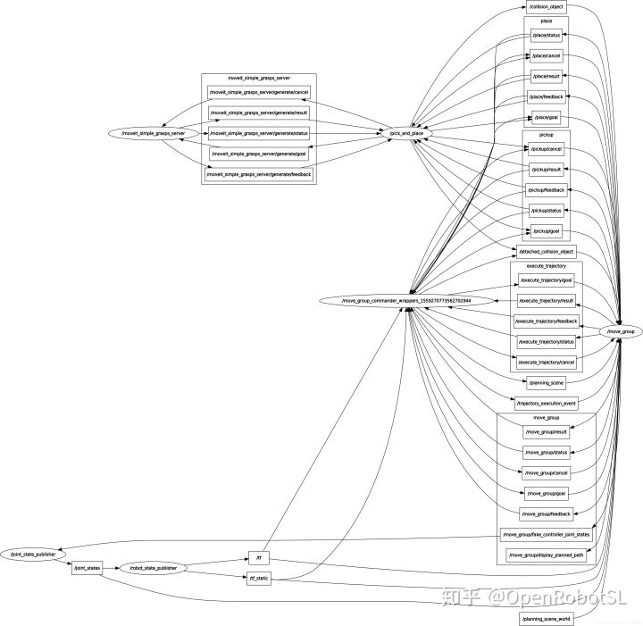
另外，还需要在grasp_data.cpp中把相关数据修改成自己的配置
approach_retreat_desired_dist_ = 0.15; // 0.3;
approach_retreat_min_dist_ = 0.01;
// distance from center point of object to end effector
grasp_depth_ = 0.01;// in negative or 0 this makes the grasps on the other side of the object! (like from below)
// generate grasps at PI/angle_resolution increments
angle_resolution_ = 16; //TODO parametrize this, or move to action interface
运行
修改grasp_generator_server.launch为自己的配置，如下
<launch>
<arg name="robot" default="myrobot" />
<arg name="group" default="arm" />
<arg name="end_effector" default="gripper" />
<!-- Start the test -->
<node name="moveit_simple_grasps_server" pkg="moveit_simple_grasps" type="moveit_simple_grasps_server" output="screen">
<param name="group" value="$(arg group) " />
<param name="end_effector" value="$(arg end_effector)" />
<rosparam command="load" file="$(find moveit_simple_grasps)/config/$(arg robot)_grasp_data.yaml"/>
</node>
</launch>然后运行命令：
roslaunch myrobot_moveit_config demo.launch
roslaunch moveit_simple_graspsp grasp_generator_server.launch
rosrun moveit_simple_grasps pick_and_place.py参考
davetcoleman/moveit_simple_grasps
?
使用ROS MoveIt！控制diy五自由度机械臂
写在前面
环境：Ubuntu16.04+ROS Kinetic
准备工作一定要有，参见前面几篇博客，尤其是 使用MoveIt！+Arbotix控制六自由度机械臂，里面涉及到控制器配置文件的编写、launch文件修改等。
了解驱动的原理：
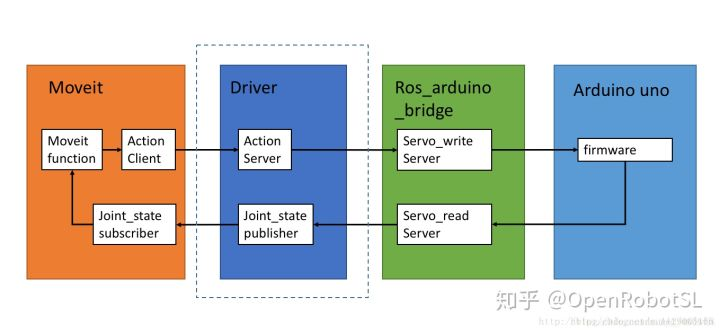
重点理解前两个模块的内容，moveit实际上是通过action这种交互机制来控制机械臂的，并且moveit只提供action client，因此driver中的action server需要自己编写，两者的接口类型为FollowJointTrajectoryAction。
我没有使用ros_arduino_brige，直接在arduino IDE中编写ros节点订阅driver发送过来的关节信息，然后驱动机械臂。
有机会我也要试试ros_arduino_brige～
修改功能包中相关文件
编写myrobot_controllers.yaml文件
经过moveit setup assistant设置之后，可以在myrobot_moveit_config包的config文件夹下找到一个fake_controllers.yaml文件，这个是虚拟控制器配置文件，仅供仿真使用，如果要驱动真实机械臂，就要编写自己的controller.yaml（可参见使用MoveIt！+Arbotix控制六自由度机械臂）以取代fake的那个。
myrobot_controllers.yaml格式如下，注意yaml文件对格式要求比较严格，要用空格代替tab！！
controller_list:
- name: arm_controller
action_ns: follow_joint_trajectory
type: FollowJointTrajectory
default: true
joints:
- joint1
- joint2
- joint3
- joint4
- joint5
- name: gripper_controller
action_ns: gripper_action
type: GripperCommand
default: true
joints:
- finger_joint1
- finger_joint2修改launch文件
在demo.launch文件中，重点关注如下嵌套关系:
- demo.launch
- move_group.launch
- trajectory_execution.launch.xml
- $(arg moveit_controller_manager)_moveit_controller_manager.launch.xml
一般新建的包，会以你自己的robot名自建一个空的xxx_moveit_controller_manager.launch.xml，我的就是myrobot_moviet_controller_manager.launch.xml。该文件的主要作用就是加载你自己编写的控制器yaml文件，通用格式如下：
<launch>
<arg name="moveit_controller_manager" default="moveit_simple_controller_manager/MoveItSimpleControllerManager" />
<param name="moveit_controller_manager" value="$(arg moveit_controller_manager)" />
<rosparam file="$(find myrobot_moveit_config)/config/myrobot_controllers.yaml" />
</launch>需要注意，在demo演示时，机械臂的joint_states是通过/move_group/fake_controller_joint_states这个话题发出到/joint_states话题，而驱动真实机械臂时，从上面的Driver模块中可以看出，需要自己编写一个joint_states_pulisher发布/move_group/myrobot_controller_joint_states话题。在demo.launch文件中进行修改：
<node name="joint_state_publisher" pkg="joint_state_publisher" type="joint_state_publisher">
<param name="use_gui" value="$(arg use_gui)"/>
<rosparam param="source_list">[/move_group/myrobot_controller_joint_states]</rosparam>
</node>myrobot_driver.cpp
综上，自建的/move_group/myrobot_controller_joint_states话题+上文提到的action server = myrobot_driver节点，即自定义的Driver节点。另外，我手头上的机械臂只是简单的舵机驱动，没有角度反馈，所以可以通过获取movie规划得到的最后一组数据作为机械臂运动输出后的实际状态（没有闭环反馈就是很low……），代码如下
/* myrobot_driver.cpp */
#include <ros/ros.h>
#include <actionlib/server/simple_action_server.h>
#include <control_msgs/FollowJointTrajectoryAction.h>
#include <control_msgs/FollowJointTrajectoryActionGoal.h>
#include <control_msgs/FollowJointTrajectoryActionResult.h>
#include <sensor_msgs/JointState.h>
#include <std_msgs/Float64.h>
#include <iostream>
#include <string.h>
#include <stdio.h>
#include <vector>
/*------只是arm group部分，因此只有五个舵机-----*/
//换算舵机PWM值与弧度之间的关系
//舵机运动范围PWM500-2500，对应角度0°-270°，中间状态为1500（设定为偏置）
//关节弧度范围-2.36-2.36，0rad对应舵机中间状态1500
//换算得到每变化1rad，PWM变化423
#define scaler 423
#define offset 1500
using namespace std;
class FollowJointTrajectoryAction
{
protected:
sensor_msgs::JointState js;
std_msgs::Float64 joint1_pos, joint2_pos, joint3_pos, joint4_pos, joint5_pos;
ros::NodeHandle nh;
std::string action_name_;
ros::Publisher pub_joint;//给move_group识别的publisher，代替joint_state_publisher，发布joint_states
ros::Publisher pub_joint1;//给下位机arduino识别的publiser
ros::Publisher pub_joint2;//同上
ros::Publisher pub_joint3;//同上
ros::Publisher pub_joint4;//同上
ros::Publisher pub_joint5;//同上
//与moveit中action client通讯的action server
actionlib::SimpleActionServer<control_msgs::FollowJointTrajectoryAction> as_;
control_msgs::FollowJointTrajectoryActionResult result_;
control_msgs::FollowJointTrajectoryActionGoal goal_;
public:
FollowJointTrajectoryAction(std::string name) :
as_(nh, name, false),
action_name_(name)
{
as_.registerGoalCallback(boost::bind(&FollowJointTrajectoryAction::goalCB, this));
as_.registerPreemptCallback(boost::bind(&FollowJointTrajectoryAction::preemptCB, this));
as_.start();
pub_joint = nh.advertise<sensor_msgs::JointState>("/move_group/myrobot_controller_joint_states", 10);
pub_joint1 = nh.advertise<std_msgs::Float64>("joint1_value", 100);
pub_joint2 = nh.advertise<std_msgs::Float64>("joint2_value", 100);
pub_joint3 = nh.advertise<std_msgs::Float64>("joint3_value", 100);
pub_joint4 = nh.advertise<std_msgs::Float64>("joint4_value", 100);
pub_joint5 = nh.advertise<std_msgs::Float64>("joint5_value", 100);
// ros::Rate loop_rate(10);
js.name.resize(5);
js.position.resize(5);
//名字要与关节定义的名字一致
js.name[0] = "joint1";
js.name[1] = "joint2";
js.name[2] = "joint3";
js.name[3] = "joint4";
js.name[4] = "joint5";
ROS_INFO("-------action start!-------");
}
~FollowJointTrajectoryAction(void)
{
}
void goalCB()
{
ROS_INFO("-------goal is receive!-------");
std::vector<trajectory_msgs::JointTrajectoryPoint> points_;
double points_end[5];
double Pos_length;
if (as_.isNewGoalAvailable()){
js.position.clear();
points_ = as_.acceptNewGoal()->trajectory.points;
Pos_length = points_.size();
for (int i = 0; i < 5; i++){
//假设v是一个vector对象,v.at(n)和v[n]是一样的
//但是前者会检查是否越界，后者不会
points_end[i] = points_.at(Pos_length - 1).positions[i];
js.position.push_back(points_end[i]);
}
js.header.stamp = ros::Time::now();
//向move_group节点发布规划得到的关节值
pub_joint.publish(js);
//向下位机arduino节点发布规划得到的关节值，直接得到舵机PWM值
//舵机2需要反向
joint1_pos.data = js.position[0] * scaler + offset;
joint2_pos.data = -js.position[1] * scaler + offset;
joint3_pos.data = js.position[2] * scaler + offset;
joint4_pos.data = js.position[3] * scaler + offset;
joint5_pos.data = js.position[4] * scaler + offset;
pub_joint1.publish(joint1_pos);
pub_joint2.publish(joint2_pos);
pub_joint3.publish(joint3_pos);
pub_joint4.publish(joint4_pos);
pub_joint5.publish(joint5_pos);
}else{
ROS_INFO("-------goal is not availabel!-------");
}
control_msgs::FollowJointTrajectoryResult result;
result.error_code = 0;
as_.setSucceeded(result);
}
void preemptCB()
{
ROS_INFO("%s: Preempted", action_name_.c_str());
as_.setPreempted();
}
};
int main(int argc, char *argv[])
{
ros::init(argc, argv, "myrobot_driver");
FollowJointTrajectoryAction followjointtrajectory("arm_controller/follow_joint_trajectory");//名称要与yaml配置一致
ros::spin();
return 0;
}
加个验证
运行demo，订阅/move_group/myrobot_controller_joint_states
命令如下：
$ rosrun myrobot_real myrobot_driver
$ roslaunch myrobot_moveit_config demo.launchrqt_graph一下，看看话题/move_group/myrobot_controller_joint_states加载成功没有，同时如下显示可以知道arm_controller加载成功，Driver中的action server与move_group中的action client也配对成功。


监听话题/move_group/myrobot_controller_joint_states，即rostopic echo /move_group/myrobot_controller_joint_states，拖动机械臂并规划执行，可监听到如下数据。目前需要的就是position。
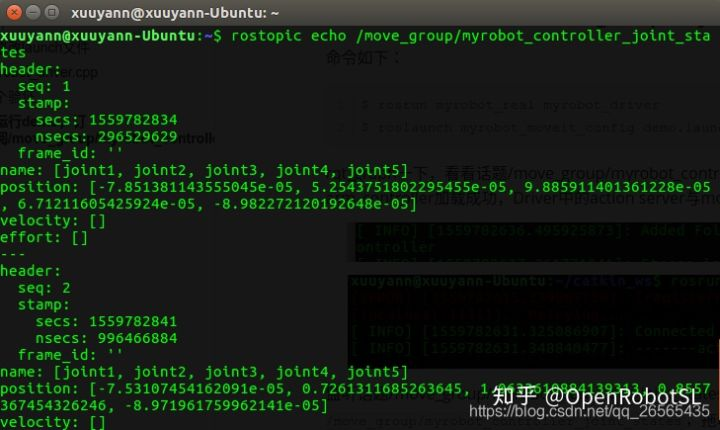
编写一个简单的myrobot_sub.cpp
为了省事，直接撸一个订阅节点，把myrobot_driver.cpp中写的jointX_value全部订阅监听一道，看算的舵机PWM值与弧度值之间是不是正确对应关系，也方便后面测试舵机。
#include <ros/ros.h>
#include <std_msgs/MultiArrayLayout.h>
#include <std_msgs/String.h>
#include <std_msgs/MultiArrayDimension.h>
#include <std_msgs/Int16MultiArray.h>
#include <sensor_msgs/JointState.h>
#include <std_msgs/Float64.h>
/*------只是arm group部分，因此只有五个舵机-----*/
#define scaler 423
#define offset 1500
float jointval[5] = {0.0, 0.0, 0.0, 0.0, 0.0};
void callback1(const std_msgs::Float64& pos_msg)
{
jointval[0] = pos_msg.data ;//舵机1
ROS_INFO("[%f] ", jointval[0]);
}
void callback2(const std_msgs::Float64& pos_msg)
{
jointval[1] = pos_msg.data ;//舵机2
ROS_INFO("[%f] ", jointval[1]);
}
void callback3(const std_msgs::Float64& pos_msg)
{
jointval[2] = pos_msg.data ;//舵机3
ROS_INFO("[%f] ", jointval[2]);
}
void callback4(const std_msgs::Float64& pos_msg)
{
jointval[3] = pos_msg.data;//舵机4
ROS_INFO("[%f] ", jointval[3]);
}
void callback5(const std_msgs::Float64&pos_msg)
{
jointval[4] = pos_msg.data ;//舵机5
ROS_INFO("[%f] ", jointval[4]);
ROS_INFO("-----------done successfully-----------");
}
int main(int argc, char *argv[])
{
/* code for main function */
ros::init(argc, argv, "ListenJointValue");
ros::NodeHandle nh;
ros::Subscriber sub1 = nh.subscribe("joint1_value", 1000, callback1);
ros::Subscriber sub2 = nh.subscribe("joint2_value", 1000, callback2);
ros::Subscriber sub3 = nh.subscribe("joint3_value", 1000, callback3);
ros::Subscriber sub4 = nh.subscribe("joint4_value", 1000, callback4);
ros::Subscriber sub5 = nh.subscribe("joint5_value", 1000, callback5);
ros::spin();
return 0;
}
$ rosrun myrobot_real myrobot_sub
成功～
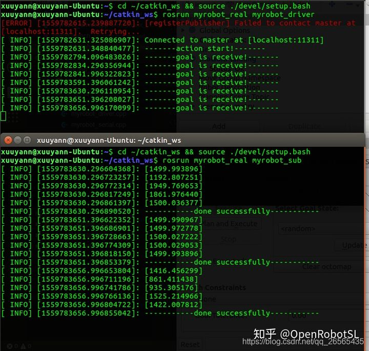
arduino端节点
模仿上面的myrobot_sub.cpp可以很快的写出arduino程序，只需要加个舵机初始化和驱动程序即可，简单来说就是订阅监听+驱动。
我试了下，舵机速度超快，震得桌子咚咚响，不行不行太吵了。我之前写了个控制舵机速度的程序，以1rad/s的速度改改正好可以拿来用Arduino学习（4）——串口发送指令控制舵机速度。
代码如下：
#include <ros.h>
#include <std_msgs/Int16.h>
#include <std_msgs/Float64.h>
#include <ArduinoHardware.h>
#include <Servo.h>
#define USE_USBCON
#define SERVO_NUM 5
#define init 1500
#define SERVO_TIME_PERIOD 20 //每隔20ms处理一次（累加）舵机的PWM增量
Servo myservo[SERVO_NUM];
const byte servo_pin[SERVO_NUM] = {10, A2, A3, A0, A1};
float jointval[SERVO_NUM] = {0.0, 0.0, 0.0, 0.0, 0.0};
//float buf[SERVO_NUM] = {0.0, 0.0, 0.0, 0.0, 0.0};
bool check = false;//check为true才表示订阅到消息
typedef struct { //舵机结构体变量声明
unsigned int aim = 1500; //舵机目标值
float cur = 1500.0; //舵机当前值
float inc= 8.48; //舵机值增量，以20ms为周期
}duoji_struct;
duoji_struct servo_do[SERVO_NUM]; //用结构体变量声明一个舵机变量组
ros::NodeHandle nh;
void joint1_callback(const std_msgs::Float64& msg){
jointval[0] = msg.data;
//buf[0] = jointval[0];
//myservo[0].writeMicroseconds((int)jointval[0]);
check = true;
}
void joint2_callback(const std_msgs::Float64& msg){
jointval[1] = msg.data;
//buf[1] = jointval[1];
//myservo[1].writeMicroseconds((int)jointval[1]);
}
void joint3_callback(const std_msgs::Float64& msg){
jointval[2] = msg.data;
//buf[2] = jointval[2];
//myservo[2].writeMicroseconds((int)jointval[2]);
}
void joint4_callback(const std_msgs::Float64& msg){
jointval[3] = msg.data;
//buf[3] = jointval[3];
//myservo[3].writeMicroseconds((int)jointval[3]);
}
void joint5_callback(const std_msgs::Float64& msg){
jointval[4] = msg.data;
//buf[4] = jointval[4];
//myservo[4].writeMicroseconds((int)jointval[4]);
}
ros::Subscriber<std_msgs::Float64> sub1("joint1_value", joint1_callback);
ros::Subscriber<std_msgs::Float64> sub2("joint2_value", joint2_callback);
ros::Subscriber<std_msgs::Float64> sub3("joint3_value", joint3_callback);
ros::Subscriber<std_msgs::Float64> sub4("joint4_value", joint4_callback);
ros::Subscriber<std_msgs::Float64> sub5("joint5_value", joint5_callback);
void AttachServosAndInit()
{
for (byte i = 0; i < SERVO_NUM; i++){
myservo[i].attach(servo_pin[i]);
myservo[i].writeMicroseconds(init);
}
}
void subscribeToAll()
{
nh.subscribe(sub1);
nh.subscribe(sub2);
nh.subscribe(sub3);
nh.subscribe(sub4);
nh.subscribe(sub5);
}
/*
时间处理函数，第一个参数是上一次处理时间点， 第二个参数是处理时间间隔，
到达时间间隔返回0，否则返回1
*/
bool handleTimePeriod( unsigned long *ptr_time, unsigned int time_period) {
if((millis() - *ptr_time) < time_period) {//millis()返回Arduino开始运行当前程序以来经历的毫秒数
return 1;
} else{
*ptr_time = millis();
return 0;
}
}
//解析订阅得到的PWM
void analyJoint()
{
for (byte i = 0; i < SERVO_NUM; i++)
servo_do[i].aim = (int)jointval[i];
}
//舵机PWM增量处理函数，每隔SERVO_TIME_PERIOD毫秒处理一次，这样就实现了舵机的连续控制
void handleServo()
{
static unsigned long systick_ms_bak = 0;
if(handleTimePeriod(&systick_ms_bak, SERVO_TIME_PERIOD))return; //20ms处理一次，不到20ms则返回不处理
for(byte i = 0; i < SERVO_NUM; i++) {
if(abs( servo_do[i].aim - servo_do[i].cur) <= abs (servo_do[i].inc) ) {//这里就体现了这个程序的精度，SERVO_TIME_PERIOD越小精度越高
myservo[i].writeMicroseconds(servo_do[i].aim);
} else {
if (servo_do[i].aim < servo_do[i].cur )
servo_do[i].cur -= servo_do[i].inc;
else
servo_do[i].cur += servo_do[i].inc;
myservo[i].writeMicroseconds((int)servo_do[i].cur);
}
}
}
void setup(){
nh.initNode();
subscribeToAll();
AttachServosAndInit();
}
void loop(){
nh.spinOnce();
analyJoint();
if (check){//保证起始状态为中间位置
handleServo();
}
}
效果图
运行命令rosrun rosserial_python serial_node.py /dev/ttyUSB0

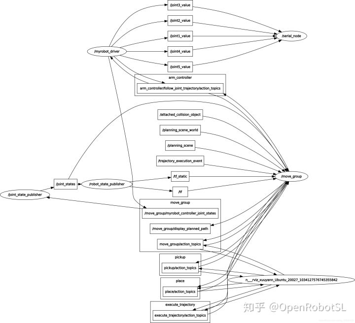
======================================================================
我的测试结果及程序
下面是我测试的代码：